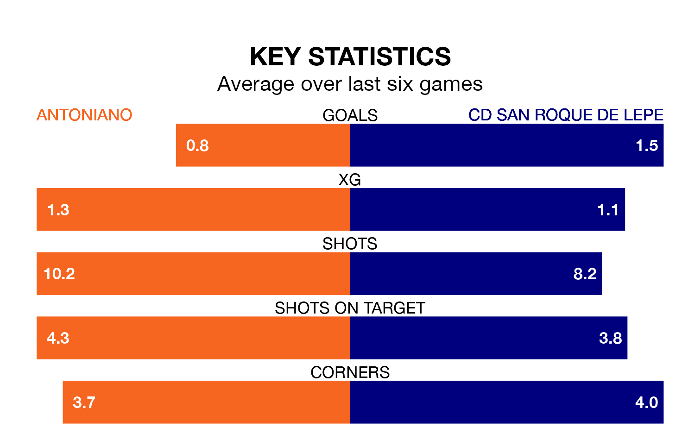

Struggling CD San Roque de Lepe face Antoniano away at the Estadio Municipal on Sunday looking to build on a win in their last league outing.
After securing all three points with a 4-1 victory over Cartagena B on January 14, San Roque de Lepe sit 17th in Segunda División RFEF Group 4.
They travel to play an Antoniano side 14th in the standings, who also won their last match, 1-0 against Racing Cartagena MM.
With 14 goals in 18 games so far this season, Antoniano are scoring at below the league average rate with 0.8 goals per game. And they are conceding more than average, letting in 25 goals at a rate of 1.4 per game.
San Roque de Lepe, meanwhile, are average scorers, with 1.0 goal per game. They have conceded 1.1 goals per game.
The home team are in mixed form in Segunda División RFEF Group 4, with two wins and a draw from their last six games.
With two wins and four losses over that period, the visitors' form is slightly worse – they have taken six points from 18, compared to Antoniano's seven.
Updated: 13:09 (UTC), 17/01/24